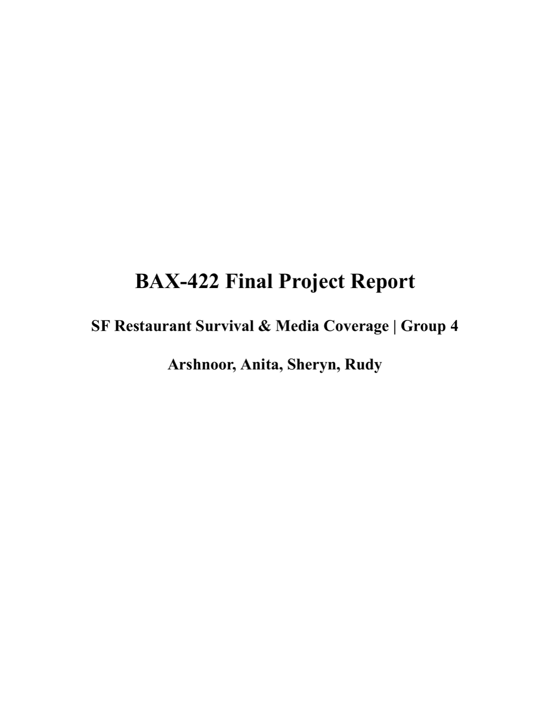

Data engineering / database design
SF Restaurant Survival & Media Coverage
A restaurant data infrastructure project connecting San Francisco business lifecycle records with editorial restaurant coverage to study survival, visibility, and neighborhood patterns.

Problem
Restaurant openings, closures, neighborhoods, and editorial coverage live in separate sources, making it hard to analyze survival patterns or media visibility from one dataset.
What I Built
- Built the SF OpenData SODA API pipeline and editorial web scraper using Python requests and BeautifulSoup.
- Designed RegEx-based normalization for restaurant names and addresses.
- Matched records with address-first and name-fallback logic, then exported cleaned JSON for MongoDB analysis collections.
Evidence
- Collected 14,742 SF OpenData records and 511 scraped editorial records.
- Deduplicated the editorial source to 247 restaurant records across 16 neighborhoods.
- Observed featured restaurants averaging 3,047 days in lifespan vs. 2,092 days for non-featured restaurants in the dataset.
Technical Artifacts
SF OpenData Pipeline
API pagination, restaurant filtering, post-2020 cohort creation, lifespan features, and JSON export.
Infatuation Scraper
Neighborhood guide discovery, polite requests, BeautifulSoup parsing, deduplication, and editorial metadata export.
MongoDB Integration Notebook
Source cleaning, normalized name/address fields, collection setup, and joined analysis dataset structure.
Team Query Output PDF
MongoDB aggregation outputs for featured vs. non-featured lifespan, neighborhood rankings, and rating analysis.
Tech Stack
PythonSODA APIRequestsBeautifulSoupRegExJSONMongoDBData modeling